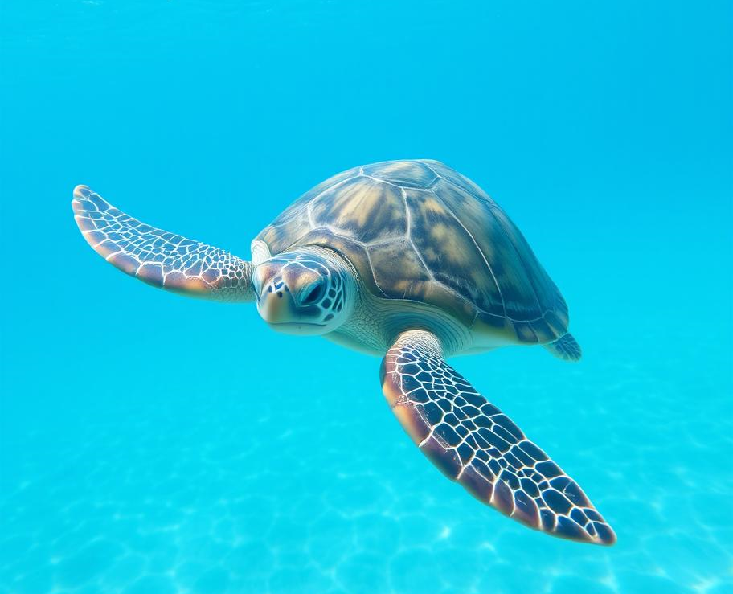
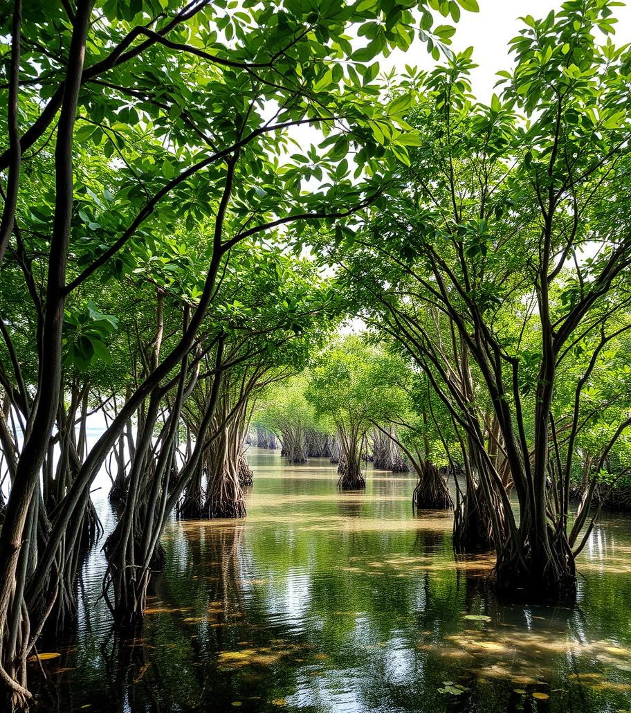
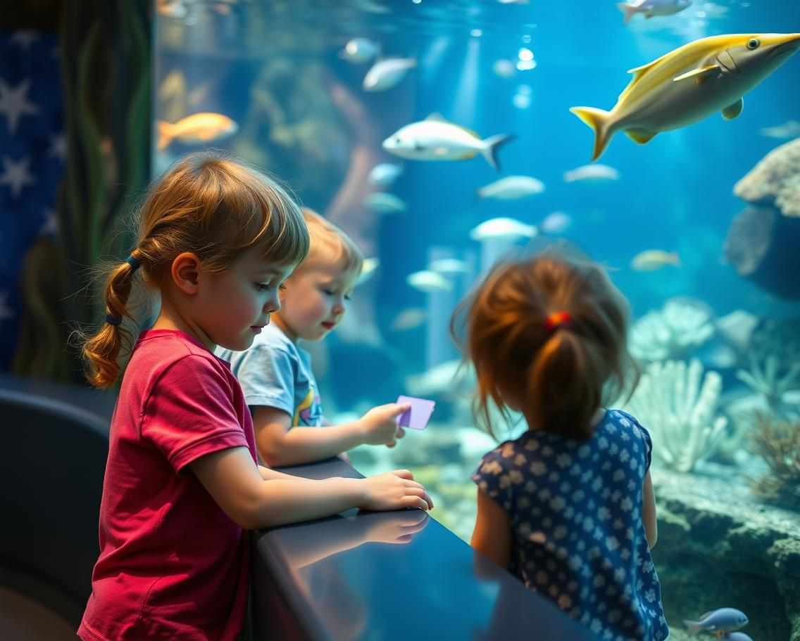

Current Projects
At Blue Horizon Conservation, we are actively engaged in a variety of projects aimed at safeguarding our oceans. Below are some of our key initiatives:
Coral Reef Restoration

Our Coral Reef Restoration project focuses on rehabilitating damaged reefs by planting new corals and monitoring their growth. By restoring these vital ecosystems, we help protect the diverse marine species that call coral reefs home.
Plastic-Free Oceans Campaign

This campaign aims to reduce plastic pollution in our oceans by organizing clean-up drives, advocating for sustainable practices, and raising awareness about the impact of single-use plastics. We believe that a plastic-free ocean is within reach if we all work together.
Protecting Endangered Marine Species
Through our efforts to protect endangered species like sea turtles, whales, and sharks, we are ensuring that these magnificent creatures continue to thrive in their natural habitats. Our work includes tracking populations, combating illegal hunting, and promoting conservation-friendly policies.
Coastal Ecosystem Preservation
Our Coastal Ecosystem Preservation project is dedicated to conserving critical coastal habitats such as mangroves, salt marshes, and seagrass beds. These areas not only support biodiversity but also protect shorelines from erosion and storm surges
Ocean Education and Awareness
Education is at the heart of our mission. Through workshops, school programs, and public campaigns, we strive to educate communities about the importance of ocean conservation and inspire the next generation of ocean advocates.
These projects are just a glimpse of our ongoing efforts to protect our oceans. Join us in making a lasting impact on the blue horizon!
Past projects
Removing Marine Debris
The Ocean Cleanup Expedition was launched to address the pressing issue of marine debris affecting our oceans. In a series of targeted cleanup missions, Blue Horizon Conservation and our dedicated volunteers have removed 500 tons of ocean waste, including plastics and fishing nets. This initiative not only cleans up the marine environment but also prevents further harm to marine wildlife. By combining advanced technology with grassroots efforts, we have significantly reduced pollution in critical marine areas, contributing to healthier oceans and cleaner beaches.
Promoting Responsible Fishing Practices

The Sustainable Fisheries Initiative is a transformative project aimed at fostering responsible fishing practices and enhancing marine ecosystem management. By collaborating with over 200 local fisheries, Blue Horizon Conservation has implemented sustainable fishing techniques that reduce bycatch and prevent overfishing. This initiative has led to a 15% increase in fish stocks and a significant reduction in harmful fishing practices. Through workshops, training sessions, and policy advocacy, we are working to ensure long-term sustainability for marine resources and the communities that depend on them.
How you can help
Volunteer for Cleanups:
What: Join our beach and underwater cleanup events.
How: Sign up on our Events Page. We provide gear; just bring enthusiasm and a reusable water bottle.
Upcoming Events: September 15, 2024 - Beach Cleanup; October 5, 2024 - Underwater Dive Cleanup.
Join the Virtual Cleanup Challenge
What:Spread awareness through our online campaign.
How:Share your cleanup efforts on social media with #BlueHorizonCleanup.
Dates:August 1 - December 31, 2024.
Volunteer stories and interviews
Interview with Sarah Thompson, Beach Cleanup Volunteer
Q: What inspired you to join Blue Horizon Conservation's beach cleanup efforts?
Sarah: I've always loved the ocean and felt deeply concerned about the increasing pollution. Seeing the impact firsthand during my visits to the beach motivated me to take action. I found Blue Horizon Conservation's mission inspiring, and I wanted to be part of a solution.
Q: Can you share your experience from the recent cleanup event?
Sarah: Absolutely! The beach cleanup event was eye-opening. We removed tons of plastic and other debris that had been washed ashore. It was a team effort, and the camaraderie among volunteers was amazing. We found some unusual items too, like old fishing nets and even a discarded tire. The satisfaction of seeing the beach clean and knowing we made a difference was incredibly rewarding.
Q: How has volunteering with BHC impacted you personally?
Sarah: Volunteering has made me more aware of the small actions I can take in my daily life to reduce waste and support ocean conservation. It's also given me a strong sense of community and purpose. I've met so many passionate people, and we've become a tight-knit group dedicated to protecting our environment.
Story of Mark Johnson, Community Cleanup Organizer
Mark Johnson, a local high school teacher, decided to organize a community cleanup event in his town. Here's his story:
Q: What motivated you to organize a community cleanup event?
Mark: I was inspired by Blue Horizon Conservation's community engagement efforts and wanted to do something similar in my own town. I noticed that local parks and waterways were becoming increasingly polluted, and I felt that a community effort could make a big impact.
Q: How did the event go, and what was the community's response?
Mark: The event was a huge success! We had over 50 volunteers from all ages come out to help. Together, we collected several large bags of trash and made a noticeable difference in the park's appearance. The community's response was overwhelmingly positive—many participants expressed their gratitude and asked how they could get more involved.
Q: What was the most memorable moment for you during the cleanup?
Mark: The most memorable moment was seeing the sense of accomplishment on everyone's faces as we finished. One volunteer brought her young children, and they were excited to see the difference we had made. It was heartwarming to see people of all ages coming together for a common cause and feeling proud of their contribution.
Q: How has organizing this event influenced your perspective on community action?
Mark: It's shown me that even small actions can lead to significant change when people come together. The event not only cleaned up our local environment but also strengthened community bonds and raised awareness about the importance of environmental stewardship. It's inspired me to continue organizing and advocating for local conservation efforts.
These stories highlight the personal experiences and impact of volunteers contributing to Blue Horizon Conservation’s initiatives, showcasing the positive effects of their efforts on both the environment and the community.